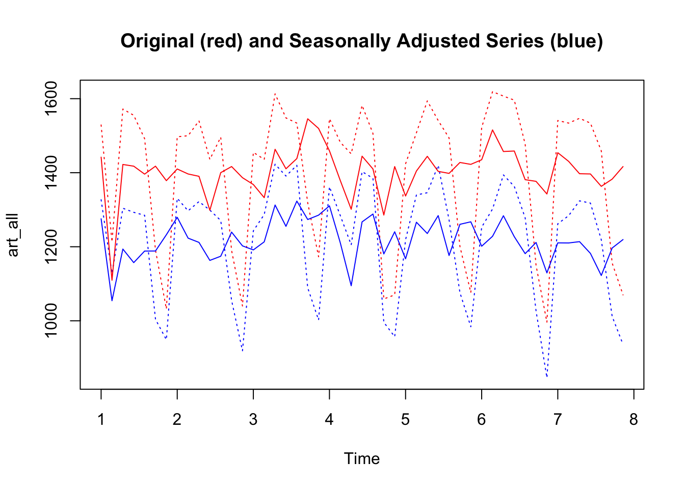

Chapter7 Structural Decomposition
7.1 Components of a time series
A time series can be considered composed of 4 main parts: trend, cycle, seasonality, and the irregular or remainder/residual part.

7.1.1 Trend and Cycle
The Trend component is the longest-term behavior of a time series. The simplest model for a trend is a linear increase or decrease, but the trend does not have to be linear. In the AirPassengers time series there is a clear upward, linear trend.
7.1.2 Stochastic and Deterministic Trend
There is a distinction between deterministic and stochastic trends.
A deterministic trend is a fixed function of time. If a series has a deterministic trend, the increase (or decrease) in the value of the series is a function of time. For instance, it may appear to grow or decline steadily over time. A deterministic trend can be linear, as well as non linear. Deterministic trends have plausible explanations (for example, a deterministic increasing trend in the data may be related to an increasing population). A series with deterministic trend is also called trend stationary.
A stochastic trend wanders up and down or shows change of direction at unpredictable times. Time series with a stochastic trend are also said to be difference stationary. An example of stochastic trend is provided by the so-called random walk process.
Random Walk is a particular time series process in which the current values are combinations of the previous ones (\(x_t = x_{t-1} + w_t\), where \(x_{t-1}\) is the value immediately before \(x\), and \(w_t\) is a random component). The resulting time series is characterized by a discernible pattern over time which is not exactly predictable (stochastic trend). Starting from the same initial point, the same process can generate different time series.
A paper on The effectiveness of social distancing in containing Covid-19 shows an example of stochastic trend and complex, deterministic nonlinear trends represented by polynomials.
![Figure 5 shows the actual number of Covid-19 cases recorded in the UK up to 17 June 2020. The stochastic trend estimated earlier is superimposed on the actual observations and so are two deterministic nonlinear trends represented by polynomials of degrees 5 and 6. We can see that the stochastic trend captures the slow growth at the beginning of the sample period whereas the two deterministic trends do not. The stochastic trend is also better at capturing the sharp increase represented by observation number 72. (original caption)](images/covid-trends.jpeg)
Figure 7.1: Figure 5 shows the actual number of Covid-19 cases recorded in the UK up to 17 June 2020. The stochastic trend estimated earlier is superimposed on the actual observations and so are two deterministic nonlinear trends represented by polynomials of degrees 5 and 6. We can see that the stochastic trend captures the slow growth at the beginning of the sample period whereas the two deterministic trends do not. The stochastic trend is also better at capturing the sharp increase represented by observation number 72. (original caption)
The trend component of the series is often considered along with the cyclic one (trend-cycle). The cyclical component is represented by fluctuations (rises and falls) not occurring at a fixed frequency. The cycle component is therefore different from the seasonal variation (see below) in that it does not follow a fixed calendar frequency.
7.1.3 Seasonality
The Seasonal component is a repeated pattern occurring at a fixed time period such as the time of the year or the day of the week (the frequency of seasonality, which is always a fixed and known frequency). There is a clear seasonal variation in the AirPassenger time series: bookings were highest during the summer months of June, July, and August and lowest during the autumn/winter months.
It is possible to plot the distributions of data by months by using the function boxplot and cycle, to visualize the increasing number of passengers during the summer months. In this case, cycle is used to refer to the positions of each observation in the (yearly, in this case) cycle of observations (every year is considered to be a cycle of 12 observations).
The library forecast, an R package that provides methods and tools for displaying and analysing time series forecasts, includes a function to create a “polar” seasonal plot.
An example of weekly seasonality can be found in the COVID-19 statistics.
Figure 7.2: Covid statistics (Google)
Cyclic and seasonal variations can look similar. Both cyclic and seasonal variations have ‘peak-and-trough’ patterns. The main difference is that in seasonal patterns the period between successive peaks (or troughs) is constant, while in cyclical patterns the distance between successive peaks is irregular.
7.1.4 Residuals
The irregular or remainder/residual component is the random-like part of the series.
In general, when we fit mathematical models to time series data, the residual error series represents the discrepancies between the fitted values, calculated from the model, and the data. A good model encapsulates most of the deterministic features of the time series, and the residual error series should therefore appear to be a realization of independent random variables from some probability distribution.
The analysis of residuals is thus important to judge the fit of a model. In this case, its residual error series appears to be a realization of independent random variables. Often the random variable is conceived as a Gaussian random variable. We’ll return to these topics in the last part of the chapter.
7.2 Structural decomposition
Along with the analysis of the peaks (see previous chapter), analyzing a time series based on these structural parts can be an important exploratory step. It helps understanding the likely causes of the series features and formulate an appropriate time series model. For instance, in the case of the AirPassengers series, we could hypothesize that the increasing trend is due to the rising prosperity in the aftermath of the Second World War, greater availability of aircraft, cheaper flights due to competition between airlines, and an increasing population. The seasonal variation, instead, seems to coincide with vacation periods.
Decomposition methods try to identify and separate the above mentioned parts of a time series. Usually they consider together the trend and cycle (trend-cycle) - the longer-term changes in the series - and the seasonal factors - periodic fluctuations of constant length happening at a specific calendar frequency).
There are two main ways through which these elements can be combined together: in the additive and the multiplicative form:
- The additive model (\(x_{t} = m_{t} + s_{t} + z_{t}\), where \(x_{t}\) is the observed time series, \(m_{t}\) is the trend-cycle component, \(s_{t}\) is the seasonal component and \(z_{t}\) is the residual) is useful when the seasonal variation is relatively constant over time
- The multiplicative model (\(x_{t} = m_{t} * s_{t} * z_{t}\)) is useful when the the seasonal effects tends to increase as the trend increases.
There are different methods to decompose a time series. Here we consider the function decompose. This function is defined as Classical Seasonal Decomposition by Moving Averages. The function decompose uses a moving average (MA) approach to filter the data. Moving average is a classical approach to extract the trend from a time series by averaging out the seasonal effects.
7.2.1 Moving Average
Moving average is a process that replaces each value \(x_{t}\) with an average of its current value \(x_{t}\) and its immediate neighbors in the past and future. For instance, it is possible to calculate a simple moving average by using the closest neighbors of a point, as follows: \(x_{t} = \frac{1}{3} (x_{t-1} + x_{t} + x_{t+1})\). This is called Centered Moving Average.
The number of neighbors in the past and future is determined by the analyst and is also called width of the window. The time window for the moving average is chosen by considering the frequency of the data and their seasonal effects. For instance, monthly data, which are supposed to show monthly seasonality (for instance, in the AirPassengers data there are more passengers during the summer months), can be averaged by using a period of 12 months (six months before and after each point. Since we have an even number of months, some other calculation are necessary. For instance, the moving average value for July, is calculated by averaging the average of January up to December, and the average of February up to January. R functions do this for you).
The centered moving average is an example of a smoothing procedure that is applied retrospectively to a time series with the objective of identifying an underlying signal or trend. Smoothing procedures usually use points before and after the time at which the smoothed estimate is to be calculated. A consequence is that the smoothed series will have some points missing at the beginning and the end unless the smoothing algorithm is adapted for the end points. In the case of monthly data, for instance, the moving average filter determines the lost of the first and last six months of data.
Smoothing procedures like moving average, allows the main underlying trend to emerge by filtering out seasonality and noise, so they are used to get an idea of the long-term underlying process of a time series.
## en en2 en4
## 2015-01-01 0.01456405 0.01334178 NA
## 2015-01-02 0.01211950 0.01192277 0.01275765
## 2015-01-03 0.01172604 0.01217353 0.01266199
## 2015-01-04 0.01262102 0.01340120 0.01332611
## 2015-01-05 0.01418138 0.01447869 0.01320110
## 2015-01-06 0.01477600 0.01300100 0.01294493
## 2015-01-07 0.01122600 0.01141117 0.01241382
## 2015-01-08 0.01159633 0.01182664 0.01169304
## 2015-01-09 0.01205695 0.01197492 0.01214178
## 2015-01-10 0.01189290 0.01245691 0.01277492
## en8 en16 en32
## 2015-01-01 NA NA NA
## 2015-01-02 NA NA NA
## 2015-01-03 NA NA NA
## 2015-01-04 0.01285129 NA NA
## 2015-01-05 0.01253790 NA NA
## 2015-01-06 0.01250958 NA NA
## 2015-01-07 0.01267144 NA NA
## 2015-01-08 0.01285992 0.01257820 NA
## 2015-01-09 0.01262867 0.01239793 NA
## 2015-01-10 0.01226887 0.01234396 NA7.2.2 Decompose
To apply the function decompose, we need a ts object.
Considering the AirPassengers time series, since the seasonal effect tends to increase as the trend increases, we can use a multiplicative model.

As an example of an additive model we can use data from the “Seatbelts” dataset.
The residual part of the model should be (approximately) random, which indicates that the model explained (most of) the significant patterns in the data (the “signal”), leaving out the “noise”.
We can re-create the original time series starting from its elements (we don’t actually need to do that, it is just for illustrative purposes).
7.2.3 Compare Additive and Multiplicative Models
Sometimes it could be hard to choose between additive or multiplicative models. In general, when seasonality or the variation around the trend-cycle component change proportionally to the level of the series (the trend, or the average), the multiplicative model works better. However, it might be difficult to assess the variability of the series from a time series plot.
Exploratory methods, such as representing the variability in the data through box plots can help. The following “custom” function (which I called ts.year.boxplot) takes as argument a time series ts, and shows the spread of the data by year.
A multiplicative time series like the AirPassengers shows a clear increasing spread as the level of the series goes up:

The box plots of an additive time series look more regular. There is no evident systematic
Below you can find another function (I called it compare.decomposition.methods) that compares the additive and multiplicative decomposition models applied to the same ts series. It creates plots of residuals (the time series plot, histogram, acf and pacf plots) and (roughly) measures the total residuals and residuals’ autocorrelation (lower values are better). It also creates a plot showing the different fit of the additive and multiplicative model to the data, and includes the boxplot introduced above. We can try looking at these plots and the total autocorrelation measure to get further hints into the most appropriate method.
In this case, the multiplicative model looks better.
## ###################################
## TOTAL AUTOCORRELATION (ABSOLUTE VALUES)
## ###################################
## ADITTIVE MODEL = 7.19
## MULTIPLICATIVE MODEL = 0.84
##
## ###################################
## SUM OF RESIDUALS (ABSOLUTE VALUES)
## ###################################
## ADITTIVE MODEL = 98.35
## MULTIPLICATIVE = 95.977.3 Adjust time series
Sometimes the analyst is not interested in the trend or in the seasonal variation in the data, and might want to remove them, in order to let other underlying process to emerge more clearly. Other times, some components of time series can be misleading, leading to inflated or spurious correlations, and can be preferable to remove them before proceding with the analysis.
7.3.1 Seasonal adjusted data
It is common to find seasonally adjusted data, that is time series from which the seasonal component has been removed. This happen quite often in economics, for instance (but in other disciplines as well), where certain growing trends can be considered trivial, and explained based on solid theory. Other parts of the series are instead considered more important, and removing the seasonal component allow them to emerge more clearly, as summarized by Granger, C. W. (1978), Seasonality: causation, interpretation, and implications. In Seasonal analysis of economic time series:
Presumably, the seasonal is treated in this fashion, because it is economically uninportant, being dull, superficially easily explained, and easy to forecast but, at the same time, being statistically important in that it is a major contributor to the total variance of many series. The presence of the seasonal could be said to obscure movements in other components of greater economic significance. (…) It can be certainly be stated that, when considering the level of an economic variable, the low frequency components (the trend-cycle, ed.) are usually both statistically and economically important. (…) Because of their dual importance, it is desirable to view this component as clearly as possible and, thus, the interference from the season should be removed. (…) the preference for seasonally adjusted data is so that they can more clearly see the position of local trends or the place on the business cycle. It is certainly true that for any series containing a strong season, it is very difficult to observe these local trends without seasonal adjustment.
Moreover, seasonality can lead to spurious correlations:
(…) if the relationship between a pair of economic variables is to be analyzed, it is obviously possible to obtain a spurious relationship if the two series contain important seasonals. By adjusting series, one possible source of spurious relationship is removed.
However, adjust for seasonality a series is application specific, and sometimes this part of the series can be of interest:
Firms having seasonal fluctuations in demand for their products, for example, may need to make decisions based largely on the seasonal component (…) and a local government may try to partially control seasonal fluctuations in unemployment. (…) Only by having both the the adjusted and the unadjusted data available can these potential users gain the maximum benefit from all of the effort that goes into collecting the information.
There are many different methods to adjust data for seasonality. A simple approach is based on the results of the decomposition process, and consists in subtracting (in the case of an additive decomposition model) the seasonal component from the original series, or dividing the original series by the seasonal component (in the case of a multiplicative model).
Adjusting for seasonal variations makes it possible to observe potentially noteworthy fluctuations. In the case of the AirPassengers data, for instance, the seasonally adjusted plot shows more clearly an anomaly in the year 1960 that was not noticeable in the raw data.
Below you can find another example with data from social media (you can download them here art1, and art2), consisting in posts published by pages of news media.

By calculating a simple correlation between the original series and the de-seasonalized series, it can be observed that the correlation coefficients changes.
## [1] 0.9641655## [1] 0.72098237.3.2 Detrended series
As the series can be adjusted for seasonality, it can also be adjusted for trend based on the same reasons. A similar process can also be used to remove the trend from the data, in particular in the case of a deterministic trend.
In the case of a stochastic trend, instead, the usual practice is to detrend the data through differencing. Differencing means taking the first difference of consecutive points in time \(x_t\) - \(x_{t-1}\). In this way, the resulting series represents the relative change from one point in time to another.

Detrending a time series can be important before applying some statistical techniques, for instance before calculating the correlation between two time series. Time series with a trend component can reveal spurious correlations, since correlations may exist just because two variables are trending up or down at the same time. By detrending the time series, it can be more appropriately measured if the change in one time series over time is related to the change in another time series.
Detrending time series is also used when researchers consider irrelevant the trend. This is the case when the trend is considered an obvious characteristic of the process. For instance, economists can take for granted that there is an increasing trend in GDP due to inflation, and thus they may want to “clean” the data to eliminate this trivial trend. They are more interested in deviations from the growth, than in the growth that they consider a “normal” characteristic of the process.
There are also statistical tests to ascertain the presence of a trend.
A monotonic trend can be detected with the Mann–Kendall trend test. The null hypothesis is that the data come from a population with independent realizations and are identically distributed. For the two sided test, the alternative hypothesis is that the data follow a monotonic trend (read the help: ?mk.test). The function to calculate this test is included in the package “trend”.
##
## Mann-Kendall trend test
##
## data: AirPassengers
## z = 14.382, n = 144, p-value < 2.2e-16
## alternative hypothesis: true S is greater than 0
## sample estimates:
## S varS tau
## 8.327000e+03 3.351643e+05 8.098232e-017.3.3 Other Decomposition Methods in R
There are many different methods to decompose (and adjust) time series. Besides the classic decompose function, the following can be mentioned:
STL (in the base-R stats library): Decompose a time series into seasonal, trend and irregular components using loess
[X11], a method for decomposing quarterly and monthly data developed by the US Census Bureau and Statistics Canada, and the [SEATS] methods, implemented in the seasonal package.
7.4 White Noise and Stationarity
We said that the residual part of the model should be (approximately) random, which indicates that the model explained most of the significant patterns in the data (the “signal”), leaving out the “noise”.
The standard model of independent random variation in time series analysis is known as white noise (a term coined in an article published in Nature in 1922, where it was used to refer to series that contained all frequencies in equal proportions, analogous to white light). The charts below show how a white noise process looks like.
When we introduced the concept of deterministic and stochastic trend, we said that the series showing the first type of trend are also called trend stationary, and the series showing the second type of trend are also called difference stationary. Both these names refer to the concept of stationarity.
A process is stationary if it is homogeneous, that is, if it has no distinguished points in times or, in other words, its statistical qualities are the same for any point in time. There are more or less stringent definition of stationarity (strict and weak stationarity), and the most used for practical purposes is the so-called weak-stationarity. In this sense, a time series is said to be stationary if there is:
- no trend (no systematic change in mean, that is, time invariant mean), and no seasonality (no periodic variations);
- no change in variance over time (time invariant variance);
- no auto-correlation (we’ll return to this topic in the next chapters)
White noise is an example of stationary time series. As you can see in the chart above, white noise time series is pretty regular, the mean is always the same (0) and there are no changes in variance over time: the plot looks much the same at any point in time!
Also through differencing, the series can achive a stationary form. This is the case, in particular, of the series with a stochastic trend, that are also called difference-stationary, exactly because through differencing they become stationary.

The process through which stationarity is reached is also called Pre-Whitening, and it can be used as a pre-processing phase before conducting correlation and regression analysis:
Once the form(s) of serial dependency that best account for the series are identified, they are removed from the series. This is called prewhitening and is used to produce a series that is a “white noise” process (i.e., a process that is free of serial dependency with each value statistically independent of other values in the series). Once pre-whitening is accomplished the values of that series can be correlated with, used to predict, or predicted from, the values in other contemporaneous time series (usually also pre-whitened) representing other variables of interest. By removing serial dependency, the pre-whitening process makes these analyses free of correlated errors. It also removes the possibility that a common temporal trend or pattern is a confounding explanation for the observed association between the two variable series (VanLear, “Time Series Analysis”)
The logic behind the process and the importance of white noise is also well explained in these sentences:
This “residual” part of the data, indeed, can be used as a dependent variable, giving the analyst confidence that any time series properties in the data will not account for any observed correlation between the covariates and the dependent variable. In the univariate context, the white noise process is important because it is what we would like to “recover” from our data – after stripping away the ways in which a univariate series can essentially explain itself. By removing the time series properties of our data, leaving only white noise, we have a series that can then be explained by other sources of variation. Another way to conceptualize white noise is as the exogenous portion of the data-generating process. Each of our data series is a function of those forces that cause the series to rise or fall (the independent variables we normally include to test our hypotheses) and of time series properties that lead those forces to be more or less “sticky”. After we filter away those time series properties, we are left with the forces driving the data higher or lower. We often refer to these forces as shocks – and these shocks then reverberate in our data, sometimes for a short spell or a long spell or even infinitely. The goal of time series analysis is to separately model the time series properties (the reverberations) so the shocks (i.e., the white noise) can be captured. (Box-Steffensmeier, J. M., Freeman, J. R., Hitt, M. P., & Pevehouse, J. C. (2014). Time series analysis for the social sciences. Cambridge University Press.)